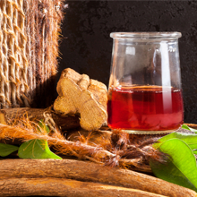
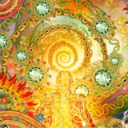
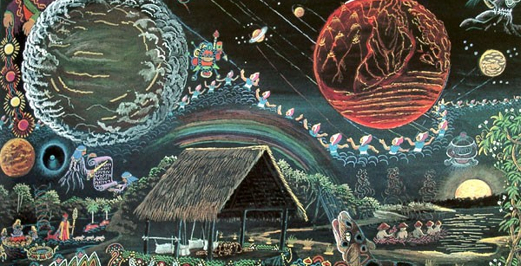
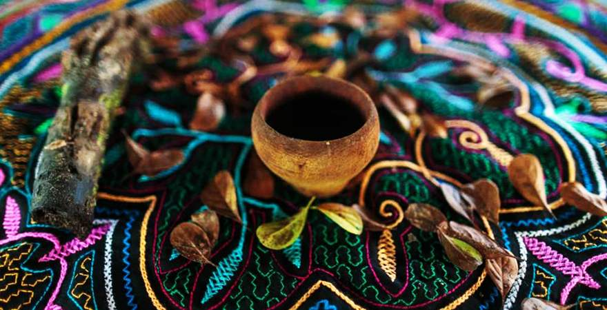

Исцеление - это процесс, наиболее важной ролью которого является Ваше участие.
Работа с лекарственными средствами растительного духа, такими как аяваска, может привести к пожизненному путешествию глубокого личностного преобразования и более тесной связи со своим истинным Я.
Важной частью медицины является стремление «духовного я» реализоваться во всём его проявлении. Однако работа с растениями требует целенаправленных намерений.
Важно чётко формулировать своё намерение и подходить к работе с преданностью, решительностью и уважением. Растения будут проверять Вас, как никакой другой опыт, который Вы имели ранее. Вам понадобится личная целостность и смелость, поскольку аяваска откроет разные стороны Вашей личности, в том числе тёмные. Знакомство с разными сторонами себя настоящего – обязательное происшествие на пути к постижению необъятной мудрости.
В процессе работы могут быть обнаружены глубочайшие страхи, а вместе с этим - изгнание тёмных энергий, которые обитали в Вашем теле, духе и сознании.


Детоксикация
Начальная работа растений сосредоточена на очищении физического тела, чтобы подготовить к последующим этапам исцеляющей работы.
На начальном этапе, Вы почти всегда будете проходить какую-то чистку (отсюда и название, данное аяваске - «la purga»), с возможной рвотой и / или диареей.
Некоторые люди имеют сверх ожидания от первых церемоний.
Однако, первые (одна – две) церемонии рассчитаны на физическое и эмоциональное исцеление. Грамотный маэстро работает поэтапно, уделяя нужное внимание и время подготовке тела и сознания. И за редким исключением предложит Вам пройти в глубокие психоэмоциональные переживания без должной готовности к их принятию, осознаванию и работе с ними.
Ваша настойчивость, терпение и решимость приведут Вас к более глубоким состояниям.
Затем, Вы перейдёте к глубокой эмоциональной и психологической работе: очистите свой разум и тело от негативной энергии, накопившейся за Вашу жизнь. Часто люди пере-просматривают эмоциональные травмы и кризисы под другим углом.
Пере-просмотр сопровождается пониманием причин, как разрушительных ситуаций Вашей жизни, так и созидательных. В ходе опыта, многие люди распознают истинную жизненную цель и собственное предназначение в физическом теле человека.

Глубокое погружение (Дальновидное путешествие)
Во время церемонии Вы можете стать свидетелями ярких огней, цветов и вращающихся психометрических дизайнов, которые, как известно, представлены в дизайнерских работах Shipibo Conibo quene. Иногда Вы можете встретить животных, таких как змеи или крокодилы.
Общепринято считать, что видения змеи или драконо-подобных существ - это встреча с матерью самой Аяуаски «La Sachamama». Это свидетельство начала глубокого погружения растениями.
На этом этапе происходит глубокая целебная работа растений, которая сопровождается знакомством со Вселенной вокруг нас.
Иногда это сопровождается тревожными видениями. Важно помнить, что Ваши намерения создают вектор Вашего опыта. Вы способны направлять свой опытом, вспоминая о нужных Вам смыслах.
Концентрация на Вашем намерении во время церемонии является обязательной. В течение более длительного периода времени и целенаправленной работы с лекарством, Ваши видения, вероятно, станут сильнее. Духи растения создадут с Вами прямой контакт и начнут открывать Вам глубокие знания о Вашем месте во Вселенной, царствах растений и животных, и возможно, даже раскрытие жизни в других измерениях и галактиках.
Аяваска - внушительный учитель, и независимо от Вашего опыта, Вы будете получать важные уроки.
В большинстве случаев растения работают иносказательно. Показанные Вам видения не обязательно означают буквально то, что Вы видите. Поэтому, пробуйте через увиденные переживания рассмотреть смысл, уготованный именно Вам внутри этих процессов.
Работа растений сопровождается усиленными чувствами, обострённым слухом, утончённым обонянием. Вы можете почувствовать себя более эмоциональным и открытым, чем когда-либо ранее в своей жизни. Многие считают, что аяваска обеспечивает глубокое «раскрытие сердца».
Аяваска проводит глубокое эмоциональное очищение, и высвобождает тело от тёмных, бесполезных энергий, по разным причинам попавших в нашу жизнь.

Каждая церемония будет не похожей на предыдущую.
В то время как один человек, возможно, испытывает драматическую чистку, вы сможете переживать единение со Вселенной. Редко, когда лекарство может выполнить всё за одну церемонию. Ваш опыт может быть совершенно другим во время следующей церемонии, в зависимости от работы, которую Вам нужно сделать.
Важно прийти без ожиданий и понять, что Ваш опыт уникален. Ваш опыт - это только Ваш опыт.
Наиболее распространенными являются переживания очищения от токсинов и подавленных эмоций, застрявших глубоко в теле.
Нет ничего необычного в том, чтобы пережить тревожную ситуацию собственной жизни из далёкого прошлого или травму глубокого детства. Оживить переживание означает получить новое понимание, которое может окончательно решить сформировавшуюся десятилетиями проблему.
Многие считают, что аяваска открывает портал в другие сферы, позволяя духам общаться с нами. В путешествии аяваски часто видятся сцены, которые передают нам личные сообщения духов. Это провоцирует переоценку нашей жизни и более глубокое понимание того, почему мы здесь, и какова наша цель.
В целом, многие, кто сталкивается с аяваской, сообщают о каком-то духовном откровении, которое невозможно выразить словами, но в итоге необратимо приводит к ощущению глубокой связи с миром и Вселенной. Мы можем начать чувствовать, что на каком-то глубоком уровне многие наши вопросы получили ответы.
Что бы ни происходило, имейте веру. Лекарство ведёт Вас в путешествие, которое может закончиться только усиленным чувством бытия, обновлённой связью с жизнью и миром. Которое научает сердце любить и быть способным выполнить то, зачем Вы пришли к священной медицине.
Даже если это кажется оптимистичным, это так!
Прикасаясь к работе с растениями, Вы должны быть оптимистичны и уверены в своих силах. Позитивное намерение к предстоящему процессу исцеления – способствует наилучшему опыту в Вашей жизни.
Настройка намерений
Один из наилучших способов получения ответов в работе со священной медициной – это создание намерений.
Внутреннее заявление о конкретной задаче, которую Вам нужно решить, может помочь Вам пройти через то, что иногда может быть запутанным опытом. Энергия следует за намерением.
Чем яснее Ваше намерение, тем сильнее результаты и тем глубже исцеление.
Если у Вас нет намерения во время работы с растениями, Вы можете оставить себя открытым для нежелательных сущностей или энергий. Вас могут отвести в тёмные места и показать вещи, которые Вам не нужно видеть. Ваши страхи могут взять контроль над Вашими процессами.
Даже если Ваше единственное намерение состоит в том, чтобы найти большую ясность в Ваших жизненных целях, Вы должны попросить об этом аяваску.
Если у Вас возникли проблемы с распознаванием своих намерений, обратите внимание на свои сны или дневник, который Вы ведёте в течение дня. Посмотрите, какие шаблоны и паттерны поднимаются в Вашем сознании, какие вопросы всплывают в осознаваемой части ума.
Наше сознание – это источник ответов, которые мы можем расшифровывать при помощи обращения на него внимания.